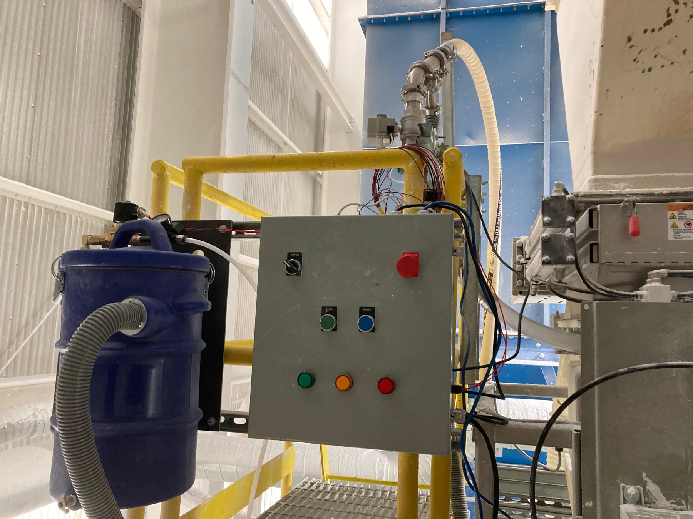

Elevare: gradual-correction implant
Tensai Surgical Solutions · University of Utah master’s project
May 2026 – Present
A functional implant prototype for gradual sternum elevation in people with pectus excavatum.

Tensai Surgical Solutions · University of Utah master’s project
May 2026 – Present
A functional implant prototype for gradual sternum elevation in people with pectus excavatum.
Solvay · BYU Capstone
Fall 2024 – Winter 2025
An installed retrieval system that cut metal-detector inspection test time by more than 80%.

International Product Development
May 2023 · Three-week program
A shopping-trolley prototype with an automated scissor lift to make loading and unloading easier.